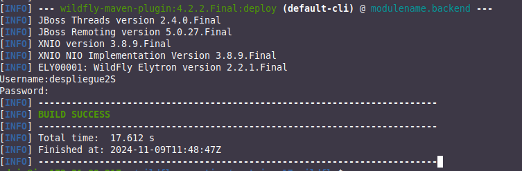
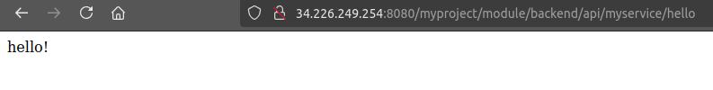
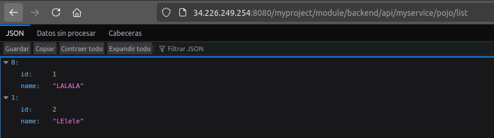

Práctica 3.1: Despliegue de una API Restful con Jakarta (Java) mediante Maven en WildFly (JBoss)
Introducción
Aún a día de hoy muchísimos proyectos que siguen utilizando Java 8 por cuestiones legacy y de dificultad de migración. La última versión de JDK, la 21, aún no está ampliamente extendida. Estas dos razones provocan que Java 17 se esté convirtiendo en una alternativa bastante atractiva y plausible ya que proporciona un buen equilibrio entre compatibilidad y funcionalidades del lenguaje.
REST
REST (Representational State Transfer) es un estilo arquitectónico para diseñar servicios web. Se basa en la idea de que los recursos de un sistema (por ejemplo, datos o servicios) deben ser identificados mediante URLs, y los métodos HTTP estándar (GET, POST, PUT, DELETE) deben usarse para interactuar con esos recursos. A diferencia de otros protocolos como SOAP, REST es ligero, simple y fácil de usar.

Los principios clave de REST incluyen:
- Stateless (sin estado): Cada solicitud HTTP es independiente y contiene toda la información necesaria para ser procesada. El servidor no mantiene el estado entre peticiones.
- Client-Server (cliente-servidor): La separación de las responsabilidades del cliente y el servidor. El cliente se encarga de la interfaz y el servidor de la lógica y almacenamiento de datos.
- Cacheable (almacenable en caché): Las respuestas a las solicitudes deben ser etiquetadas como cachéable o no cachéable.
- Uniform Interface (interfaz uniforme): Definir un conjunto común de reglas para interactuar con los recursos de manera consistente (por ejemplo, mediante las operaciones estándar de HTTP).
- Layered System (sistema en capas): Los sistemas pueden estar organizados en capas (por ejemplo, proxy, balanceadores de carga), sin que el cliente necesite saber en qué capa está interactuando.
¿Cómo es REST en el ecosistema Java?
En el ecosistema Java, REST se implementa principalmente utilizando JAX-RS (Java API for RESTful Web Services), una especificación que forma parte de Java EE (ahora Jakarta EE) y proporciona una serie de APIs y herramientas para crear servicios web RESTful.
JAX-RS permite a los desarrolladores definir recursos (entidades) que estarán disponibles a través de HTTP mediante anotaciones. Estas anotaciones mapean métodos de la clase Java a las operaciones HTTP (como @GET, @POST, @PUT, @DELETE), y facilitan la manipulación de datos en formatos como JSON o XML.
¿Qué es Jakarta RESTful Web Services (Jakarta REST)?
Jakarta RESTful Web Services es la continuación de JAX-RS bajo la nueva iniciativa Jakarta EE, después de que Oracle cediera Java EE a la Fundación Eclipse. En esta transición, los paquetes Java EE fueron renombrados a Jakarta EE, y JAX-RS se renombró como Jakarta RESTful Web Services.
La especificación de Jakarta REST (anteriormente JAX-RS) proporciona un conjunto de APIs y herramientas para desarrollar servicios web RESTful en el ecosistema Jakarta EE. Con Jakarta REST, los desarrolladores pueden crear servicios que exponen datos y funcionalidad a través de HTTP, y que son accesibles desde cualquier cliente que soporte HTTP, como navegadores, aplicaciones móviles, o incluso otros servicios web.
WildFly
WildFly es un servidor de aplicaciones Java de código abierto, anteriormente conocido como JBoss AS (Application Server). Es parte del ecosistema Jakarta EE (anteriormente Java EE) y está diseñado para ejecutar aplicaciones Java empresariales, incluidas aplicaciones web, servicios RESTful, y microservicios.
WildFly es conocido por ser ligero, rápido y altamente configurable. Soporta varias tecnologías como Servlets, JSP, EJB, JPA, JMS, y CDI, permitiendo el desarrollo de aplicaciones empresariales robustas y escalables. Además, es altamente modular, lo que le permite cargar solo los componentes necesarios para una aplicación específica, optimizando el uso de recursos.
En resumen, WildFly es un servidor de aplicaciones Java eficiente y flexible que facilita el desarrollo y despliegue de aplicaciones Java empresariales y servicios web.
Instalación de Maven y WildFly
Instalación de Maven
Para instalar Maven tenemos varias opciones, podéis consultarlas aquí
La primera, recomendada, es mucho más sencilla y automatizada (establece todos los paths y variables de entorno), aunque con la segunda se podría conseguir un paquete más actualizado.
Ambos métodos vienen explicados aquí
Si optamos por seguir el primer método, el más sencillo, vemos que es tan simple como actualizar los repositorios:
E instalar Maven
Para comprobar que todo ha ido correctamente, podemos ver la versión instalada de Maven:Instalación del servidor de aplicaciones WildFly
-
Instalar Java Development KIt (JDK)
El kit de desarrollo de Java implementa la especificación del lenguaje Java y la especificación de la máquina virtual Java, así como proporciona la Standard Edition de la interfaz de programación de aplicaciones Java. Se trata de una dependencia importante para ejecutar aplicaciones WildFly.
Podemos elegir instalar;
- Instalar OpenJDK
- Instalar Java SE Development Kit
Para ello:
A fecha de realización de estos apuntes, WildFly soporta Java 17 y Java 11, podéis confirmar vuestra versión instalada así: -
Descargar el tarball (archivo comprimido) de WildFly
Para bajarnos la última versión de WildFly disponible, utilizaremos las herramientas curl y wget. Si no las tuviéramos instaladas, primero lo haremos:
Bajamos el archivo comprimido con la última versión de WildFly:
WILDFLY_RELEASE=$(curl -s https://api.github.com/repos/wildfly/wildfly/releases/latest|grep tag_name|cut -d '"' -f 4) wget https://github.com/Wildfly/wildfly/releases/download/${WILDFLY_RELEASE}/wildfly-${WILDFLY_RELEASE}.tar.gzDescomprimimos:
Movemos el contenido descomprimido al directorio/opt: -
Configurar WildFly como un servicio más de Systemd
Para facilitar la asministración de WildFly, lo configuraremos con un servicio más del sistema. Para empezar añadiso el usuario de sistema
wildflyque es el que se encargará del servicio:sudo groupadd --system wildfly sudo useradd -s /sbin/nologin --system -d /opt/wildfly -g wildfly wildflyCreamos el directorio que contendrá las configuraciones de WildFly:
Copiamos el archivo del servicio así como los scripts de inicisio al directorio/opt/wildfly/docs/contrib/scripts/systemd/:sudo cp /opt/wildfly/docs/contrib/scripts/systemd/wildfly.conf /etc/wildfly/ sudo cp /opt/wildfly/docs/contrib/scripts/systemd/wildfly.service /etc/systemd/system/ sudo cp /opt/wildfly/docs/contrib/scripts/systemd/launch.sh /opt/wildfly/bin/ sudo chmod +x /opt/wildfly/bin/launch.shLe damos los permisos adecuados al directorio
Recargamos los servicios de systemd (sistema que se encarga de manejar los servicios en nuestra Debian):/opt/wildfly:Iniciamos el servicio WildFly y lo habilitamos para que se inicie automáticamente al arrancar la máquina:
Comprobamos que se etá ejecutando:
admin@ip-172-31-89-217:~$ sudo systemctl status wildfly ● wildfly.service - The wildfly Application Server Loaded: loaded (/etc/systemd/system/wildfly.service; enabled; preset: enabled) Active: active (running) since Sat 2024-11-09 07:58:20 UTC; 2h 46min ago Main PID: 1829 (launch.sh) Tasks: 55 (limit: 2345) Memory: 315.9M CPU: 30.111s CGroup: /system.slice/wildfly.service ├─1829 /bin/bash /opt/wildfly/bin/launch.sh standalone standalone.xml 0.0.0.0 ├─1832 /bin/sh /opt/wildfly/bin/standalone.sh -c standalone.xml -b 0.0.0.0 -bmanagement=0.0.0.0 └─1957 java "-D[Standalone]" "-Djdk.serialFilter=maxbytes=10485760;maxdepth=128;maxarray=100000;maxrefs=300000" -Xms64m -Xmx512m -XX:MetaspaceSize=96M -XX:MaxMetaspaceSize=256m -Djava.net.prefer> Nov 09 07:58:20 ip-172-31-89-217 systemd[1]: Started wildfly.service - The wildfly Application Server. -
Crear usuarios de WildFly
WildFly tiene medidas de seguridad activadas para las interfaces de administración. Por este motivo necesitamos crear un usuario que sea capaz de acceder a la consola de administración de forma remota o usando el CLI.
WildFly nos proporciona un archivo para administrar los usuarios, así que en primer lugar y para crear un usuario:
Cuando nos pregunte qué tipo de usuario queremos crear:
What type of user do you wish to add? a) Management User (mgmt-users.properties) b) Application User (application-users.properties) (a): aLe dáis el nombre de vuestro usuario (vuestro nombre, no el mío):
Y le dáis una contraseña:Enter the details of the new user to add. Using realm 'ManagementRealm' as discovered from the existing property files. Username : raulY finalizáis la creación:Password recommendations are listed below. To modify these restrictions edit the add-user.properties configuration file. The password should be different from the username The password should not be one of the following restricted values {root, admin, administrator} The password should contain at least 8 characters, 1 alphabetic character(s), 1 digit(s), 1 non-alphanumeric symbol(s) Password : <Vuestro Password> Re-enter Password : <Confirmar vuestro Password>What groups do you want this user to belong to? (Please enter a comma separated list, or leave blank for none)[ ]: <Enter> About to add user 'raul' for realm 'ManagementRealm' Is this correct yes/no? yes Added user 'raul' to file '/opt/wildfly/standalone/configuration/mgmt-users.properties' Added user 'raul' to file '/opt/wildfly/domain/configuration/mgmt-users.properties' Added user 'raul' with groups to file '/opt/wildfly/standalone/configuration/mgmt-groups.properties' Added user 'raul' with groups to file '/opt/wildfly/domain/configuration/mgmt-groups.properties' Is this new user going to be used for one AS process to connect to another AS process? e.g. for a slave host controller connecting to the master or for a Remoting connection for server to server EJB calls. yes/no? yes To represent the user add the following to the server-identities definition -
Accediendo a la consola de administración de WildFly
Para comprobar que todo está correcto, vamos a cerciorarnos de que podemos acceder a la consola de administración.
Para ser capaces de ejecutar los scripts de WildFly desde nuestra sesión actual, añadimos el directorio
Y para no tener que reiniciar nuestra sesión actual SSH, aplicamos los cambios en la sesión actual así:/opt/wildfly/bin/a nuestro PATH:Y validamos que nos podemos conectar sin problemas:
admin@ip-172-31-89-217:~$ jboss-cli.sh --connect Authenticating against security realm: ManagementRealm Username: raul Password: [standalone@localhost:9990 /] exitAccediendo a la consola de administración desde la interfaz web
Debemos modificar el archivo
/opt/wildfly/bin/launch.sh/opt/wildfly/bin/launch.shy dejarlo así:Reiniciamos el servicio tras el cambio:#!/bin/bash if [ "x$wildfly_HOME" = "x" ]; then wildfly_HOME="/opt/wildfly" fi if [[ "$1" == "domain" ]]; then $wildfly_HOME/bin/domain.sh -c $2 -b $3 else $wildfly_HOME/bin/standalone.sh -c $2 -b $3 -bmanagement=0.0.0.0 fiComprobamos su estado:
Y tras esto, debemos ser capaces de acceder a nuestra interfaz web de administración en la URL
http://IP-EC2:9990y podremos autenticarnos con el usuario creado anteriormente.Recordatorio
Recuerda que en el grupo de seguridad deberás habilitar el acceso al puerto 9990 para no tener problemas.
Configuración de carpeta de proyecto para Maven
Debéis crearos una carpeta con el nombre que queráis y que contendrá todos los archivos y directorios necesarios para la aplicación y apra poder desplegarla con Maven.
Una vez creada la carpeta, dentro de ella y como ya sabemos de la parte teórica, deber ir el archivo de configuración pom.xml.
Dentro del POM debemos establecer la dependencia de Jakarta API tal que así:
<dependencies>
<dependency>
<groupId>jakarta.platform</groupId>
<artifactId>jakarta.jakartaee-api</artifactId>
<version>10.0.0</version>
<scope>provided</scope>
</dependency>
</dependencies>
Por defecto, Maven compila los fuentes con Java 1.8 así que debemos decirle explícitamente en el pom.xmlqué versión de Java debe utilizar:
<properties>
<project.build.sourceEncoding>UTF-8</project.build.sourceEncoding>
<java.version>17</java.version>
<maven.compiler.source>${java.version}</maven.compiler.source>
<maven.compiler.target>${java.version}</maven.compiler.target>
<failOnMissingWebXml>false</failOnMissingWebXml>
</properties>
Si usamos JDK 17 con versiones antiguas del plugin de compilación de Maven nos dará un error como este:
Pero podemos solventarlo fćilmente indicando en elpom.xmlque se utilice la última versión de dicho plugin:
<plugin>
<groupId>org.apache.maven.plugins</groupId>
<artifactId>maven-compiler-plugin</artifactId>
<version>3.12.1</version>
<configuration>
<release>${java.version}</release>
</configuration>
</plugin>
En este mismo sentido, para hacer un build del war de un aplicación, debemos indicar una versión adecuada del plugin encargado de ello:
<plugin>
<groupId>org.apache.maven.plugins</groupId>
<artifactId>maven-war-plugin</artifactId>
<version>3.4.0</version>
</plugin>
Y por último, configuramos el despliegue y retirada de una aplicación en WildFly usando Maven:
Quedando el pom.xmldefinitivo tal que así:
<project xmlns="http://maven.apache.org/POM/4.0.0" xmlns:xsi="http://www.w3.org/2001/XMLSchema-instance"
xsi:schemaLocation="http://maven.apache.org/POM/4.0.0 http://maven.apache.org/xsd/maven-4.0.0.xsd">
<modelVersion>4.0.0</modelVersion>
<groupId>com.mycompany.myproject</groupId>
<artifactId>modulename.backend</artifactId>
<version>0.0.1-SNAPSHOT</version>
<packaging>war</packaging>
<properties>
<project.build.sourceEncoding>UTF-8</project.build.sourceEncoding>
<java.version>17</java.version>
<maven.compiler.source>${java.version}</maven.compiler.source>
<maven.compiler.target>${java.version}</maven.compiler.target>
<failOnMissingWebXml>false</failOnMissingWebXml>
</properties>
<dependencies>
<dependency>
<groupId>jakarta.platform</groupId>
<artifactId>jakarta.jakartaee-api</artifactId>
<version>10.0.0</version>
<scope>provided</scope>
</dependency>
</dependencies>
<build>
<finalName>${project.artifactId}</finalName>
<plugins>
<plugin>
<groupId>org.apache.maven.plugins</groupId>
<artifactId>maven-compiler-plugin</artifactId>
<version>3.12.1</version>
<configuration>
<release>${java.version}</release>
</configuration>
</plugin>
<plugin>
<groupId>org.apache.maven.plugins</groupId>
<artifactId>maven-war-plugin</artifactId>
<version>3.4.0</version>
</plugin>
<plugin>
<groupId>org.Wildfly.plugins</groupId>
<artifactId>Wildfly-maven-plugin</artifactId>
<version>4.2.2.Final</version>
</plugin>
</plugins>
</build>
</project>
Breve explicación del código
Definición de la aplicación REST con una clase de Java:
package com.mycompany.myproject.module;
import jakarta.ws.rs.ApplicationPath;
import jakarta.ws.rs.core.Application;
@ApplicationPath("/api")
public class RestApplication extends Application {
// NOP
Esto básicamente establece /api como la raíz del la API RESTful. Para definir un servicio REST:
package com.mycompany.myproject.module.services;
import java.util.Arrays;
import java.util.List;
import java.util.UUID;
import com.mycompany.myproject.module.Pojo;
import jakarta.servlet.http.HttpServletRequest;
import jakarta.ws.rs.Consumes;
import jakarta.ws.rs.DELETE;
import jakarta.ws.rs.GET;
import jakarta.ws.rs.POST;
import jakarta.ws.rs.PUT;
import jakarta.ws.rs.Path;
import jakarta.ws.rs.PathParam;
import jakarta.ws.rs.Produces;
import jakarta.ws.rs.QueryParam;
import jakarta.ws.rs.core.Context;
import jakarta.ws.rs.core.MediaType;
import jakarta.ws.rs.core.Response;
@Path("myservice")
public class MyService {
@GET
@Path("/hello")
public Response sayHello(@Context HttpServletRequest request) {
Response response = Response.ok("hello!").build();
return response;
}
@GET
@Path("/pojo/list")
@Produces({ MediaType.APPLICATION_JSON })
public List<Pojo> getAll() {
return Arrays.asList(new Pojo(1, "LALALA"), new Pojo(2, "LElele"));
}
@GET
@Path("/pojo/find/{id}")
@Produces({ MediaType.APPLICATION_JSON })
public Pojo find(@PathParam("id") Integer id) {
return new Pojo(1, UUID.randomUUID().toString());
}
@POST
@Path("/pojo/new")
@Consumes({ MediaType.APPLICATION_JSON })
public Response create(Pojo pojo) {
System.out.println("Creating new Pojo: " + pojo);
return Response.status(201).build();
}
@PUT
@Path("/pojo/update")
@Consumes({ MediaType.APPLICATION_JSON })
public Response update(Pojo pojo) {
System.out.println("Updating the Pojo: " + pojo);
return Response.status(204).build();
}
@DELETE
@Path("/pojo/remove")
public Response delete(@QueryParam("id") Integer id) {
System.out.println("Removing pojo with id: " + id);
return Response.status(204).build();
}
}
En esencia, se están definiendo seis endpoints y los hace corresponder con los métodos HTTP, GET, PUT, POST y DELETE.
Despliegue
Build
Para decirle a Maven que haga el build del archivo war, usaremos el siguiente comando, para limpiar restos de compilaciones anteriores y realizar la nueva de forma "limpia":
Esto generará el paquetetarget/module.backend-0.0.1-snapshot.war. Veamos ahora cómo desplegarlo en WildFly.
Despliegue en WildFly
Ya tenemos WildFly corriendo desde el principio de este proceso. Para realizar el despliegue, basta con meter el siguiente comando:
Os pedirá vuestro usuario/contraseña y si todo ha ido bien, veréis algo como esto:
Para confirmar que la aplicación está corriendo podemos hacer una llamada al endpoint hello mediante nuestro navegador: http://IP-EC2:8080/myproject/module/backend/api/myservice/hello:

También podemos comprobrar el endpoint /pojo/list:

Que nos devuelve una respuesta JSON, correctamente renderizada por el navegador.
Comprobad que ocurre lo mismo con /pojo/find.
Usando curl para hacer peticiones
Ejecuta el siguiente comando para poder ver a tiempo real el log de Wildfly:
Y realiza las siguiente peticiones en el terminal de tu instancia, de forma que simulamos diferentes llamadas a los endpoints de la API:
-
Crear nueva entrada (pon tu nombre, no el que viene en este comando):
-
Actualizar una entrada (pon tu nombre, no el mío):
-
Eliminar una entrada
Task
Muestra las entradas de los logs que se corresponden con estas peticiones
Referencias
How to Install Apache Maven on Debian